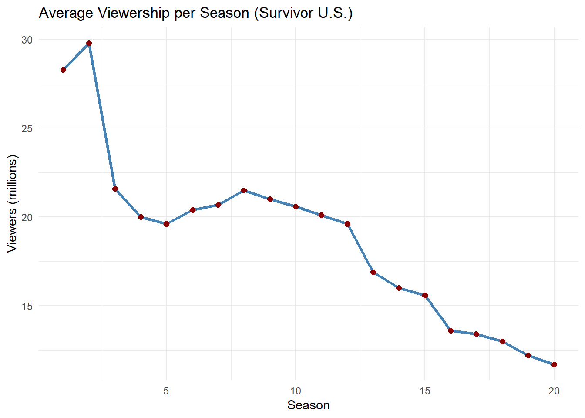
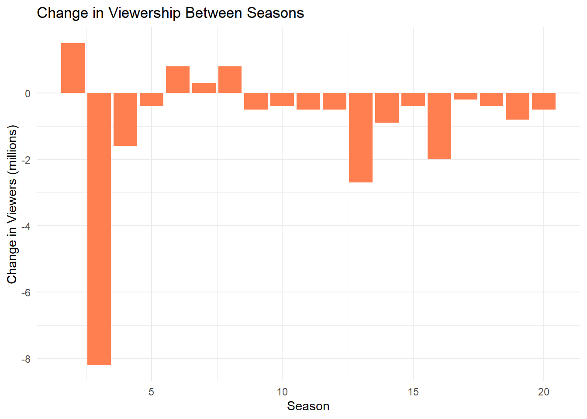

Survivor is an American reality television series that premiered on CBS on May 31, 2000. The show places a group of strangers in an isolated location, where they must fend for themselves by obtaining food, fire, and shelter. Contestants compete in various challenges—testing physical ability, mental acuity, and teamwork—to earn rewards and immunity from elimination. Periodically, players are voted out by their peers until only one remains, earning the title of “Sole Survivor” and a grand prize of $1 million. The series is hosted by Jeff Probst and has been praised for its innovative format and influence on reality television.
Figure 1: Official logo of Survivor.
Viewership Overview
Below is a summary of average U.S. viewership per season for Survivor, based on publicly available data from Wikipedia.
Here’s a summary table of average U.S. viewership:
Warning: Using `size` aesthetic for lines was deprecated in ggplot2 3.4.0.
ℹ Please use `linewidth` instead.

Season-to-Season Change
```{r}# Add viewership changedf$Change <- c(NA, diff(df$viewers))# Bar plotggplot(df[-1, ], aes(x = season, y = Change)) + geom_bar(stat = "identity", fill = "coral") + labs(title = "Change in Viewership Between Seasons", x = "Season", y = "Change in Viewers (millions)") + theme_minimal()```

Observations
The peak viewership was in Season 2 with 29.8 million viewers.
Viewership dropped by over 23 million by Season 45.
The show has remained popular despite the decline, with loyal fans and consistent social media buzz.
Historical Milestones
The Birth of Survivor: Survivor first debuted in 2000, revolutionizing reality TV with its unique format. The first season, Survivor: Borneo, became a cultural phenomenon.
Figure 2: Birth of Survivor.
Iconic Players: Players like Richard Hatch, Rob Mariano, and Sandra Diaz-Twine have become household names. Sandra remains the only two-time winner of the series, securing her place in Survivor history.
Figure 3: Survival Idols.
Game-Changing Twists: Over the years, Survivor has introduced numerous twists, including the “Hidden Immunity Idol” (Season 11), “Edge of Extinction” (Season 38), and “Fire Tokens” (Season 40).
a.Changes in Game Format
The Survivor format has evolved significantly throughout its run, incorporating twists to keep the game fresh and challenging. Key changes include:
Hidden Immunity Idols (Season 11): Contestants could find idols hidden in the game, which would give them immunity from elimination.
Figure 4: Hidden immunity idols sn47.
Edge of Extinction (Season 38): This twist allowed eliminated players to return to the game if they could survive on the “Edge” through challenges.
Figure 5: Edge of extinsion.
Fire Tokens (Season 40): Introduced as a currency for purchasing advantages or advantages in the game, this twist allowed a new layer of strategy to unfold.
b.Contestant Archetypes
As the show has evolved, different types of contestants have emerged. These archetypes often dictate a player’s strategy:
The Strategist: Players like Parvati Shallow or Tony Vlachos, who use social manipulation and strategic gameplay to outwit their competition.
The Physical Beast: Players like Rob Cesternino and Tyson Apostol, known for their physical prowess and challenge domination.
The Social Player: Contestants who rely on building alliances and maintaining a good social game, like Sandra Diaz-Twine and Cirie Fields.
Viewership Analysis
Demographic Insights
While the show’s viewership has declined, Survivor still maintains a loyal fanbase. A deeper analysis of demographic data reveals:
Younger Viewers: While older demographics (30+) remain the show’s core audience, younger viewers (18-34) have been increasingly drawn to Survivor thanks to streaming platforms like Paramount+.
Diversity: Recent seasons have made efforts to feature a more diverse cast, which has resonated with a broader audience.
The Impact of Streaming
Since moving to streaming platforms, especially with the availability of Survivor on Paramount+, viewership patterns have shifted. Many fans prefer to watch seasons at their own pace, leading to a drop in live viewing but an increase in on-demand streaming.
Social Media & Audience Engagement
Survivor has a strong presence on social media, particularly on platforms like Twitter, Reddit, and Instagram. Fans actively engage with the show, sharing opinions, fan theories, and memes. This interaction has helped maintain the show’s cultural relevance.
The Global Survivor Phenomenon
While the U.S. version remains the most popular, Survivor has become a global franchise with over 50 international versions. These global iterations often bring in local cultural elements, contributing to the show’s widespread appeal.
Figure 6 : Australia.
Future of Survivor
As Survivor continues to innovate, the future looks promising. With Jeff Probst as the longstanding host, there are discussions about potential changes to the format, including integrating more technological elements or exploring alternative voting mechanisms. Could we see a Survivor of the future where social media and online voting play a larger role?
Figure 7: Survivor 50.
Figure 8: Survivor 50 fans decide.
Interactive Section: What’s Your Favorite Season?
We’d love to hear from you! Vote for your favorite season of Survivor and tell us why it stands out to you!
Season 1: Borneo
Season 2: The Australian Outback
Season 5: Thailand
Season 20: Heroes vs. Villains
Season 40: Winners at War
```{r}# Poll for favorite seasonfavorite_season <- c("Borneo", "The Australian Outback", "Thailand", "Heroes vs. Villains", "Winners at War")poll_data <- data.frame(Season = favorite_season, Votes = c(34, 22, 17, 45, 30))ggplot(poll_data, aes(x = Season, y = Votes, fill = Season)) + geom_bar(stat = "identity", show.legend = FALSE) + labs(title = "Poll: Favorite Survivor Season", x = "Season", y = "Number of Votes") + theme_minimal()```


![]()


Social Media & Audience Engagement
Survivor has a strong presence on social media, particularly on platforms like Twitter, Reddit, and Instagram. Fans actively engage with the show, sharing opinions, fan theories, and memes. This interaction has helped maintain the show’s cultural relevance.